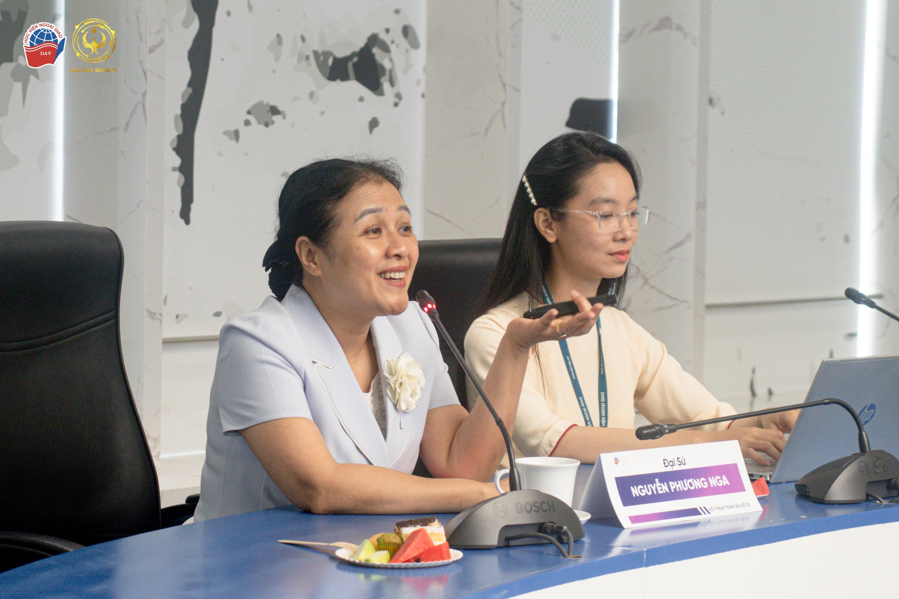
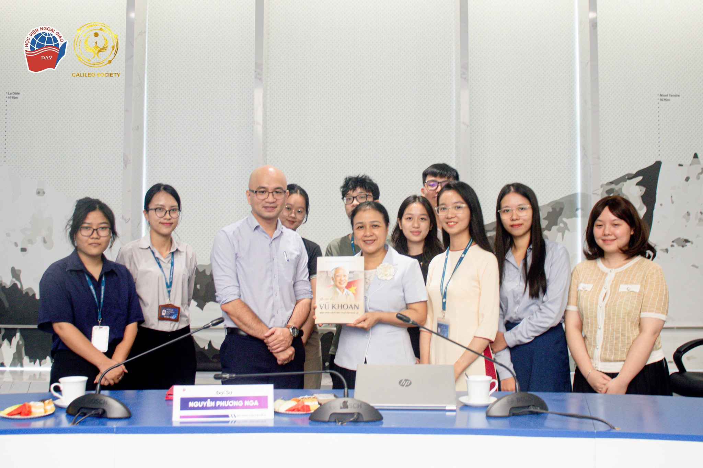

Vào ngày 23/9, Galileo Society - Hội Sinh viên Nghiên cứu khoa học, Học viện Ngoại giao đã tổ chức thành công buổi Đối thoại toàn cầu số 25 với chủ đề “NGƯỜI PHÁT NGÔN VÀ CÔNG TÁC THÔNG TIN ĐỐI NGOẠI". Đến với buổi Đối thoại toàn cầu, Galileo Society vinh dự được chào đón sự có mặt của Diễn giả: Đại sứ Nguyễn Phương Nga - Nguyên Chủ tịch Liên hiệp các tổ chức hữu nghị Việt Nam (VUFO); Nguyên Thứ trưởng, Người phát ngôn Bộ Ngoại giao Việt Nam; Nguyên Trưởng Phái đoàn đại diện thường trực Việt Nam tại Liên hợp quốc, cùng sự tham dự đông đảo của các thầy cô, anh chị và các bạn sinh viên trong và ngoài Học viện.
Chương trình đối thoại bao gồm ba phiên thảo luận chính: (i) Phiên trao đổi của Diễn giả về công tác thông tin đối ngoại; (ii) Phiên trình bày về vai trò của người phát ngôn ngoại giao trong công tác thông tin đối ngoại; (ii) Phiên hỏi đáp, thảo luận giữa Diễn giả và sinh viên tham dự.
Trong phiên thảo luận đầu tiên, Diễn giả Nguyễn Phương Nga đã giới thiệu về những khái niệm cơ bản và quá trình phát triển tư duy công tác thông tin đối ngoại của Việt Nam. Diễn giả nhận định rằng công tác thông tin đối ngoại là một bộ phận quan trọng trong công tác chính trị, tư tưởng và là công cụ thực hiện nhiệm vụ trọng tâm ba trụ cột đối ngoại gồm: đối ngoại Đảng, ngoại giao Nhà nước và đối ngoại nhân dân. Việc thực hiện công tác thông tin đối ngoại đã trở thành nhiệm vụ thường xuyên, lâu dài của cả hệ thống chính trị dưới sự lãnh đạo của Đảng, hướng tới mục tiêu phát huy vai trò tiên phong đối ngoại, xây dựng môi trường hòa bình, ổn định, huy động nguồn lực bên ngoài, nâng cao vị thế đất nước trong mắt bạn bè quốc tế. Diễn giả Nguyễn Phương Nga cũng chỉ ra một số điểm thuận lợi, hạn chế cũng như gợi mở những phương hướng, nhiệm vụ cần thiết nhằm nâng cao nhận thức, đổi mới nội dung, quảng bá hình ảnh con người, đất nước Việt Nam ra với
bạn bè quốc tế và đấu tranh, phản bác các luận điệu chống phá trong tiến trình triển khai công tác thông tin đối ngoại .
Tại phiên thảo luận thứ hai, Đại sứ Nguyễn Phương Nga cũng chia sẻ những kiến thức và kinh nghiệm thực tế của mình về vai trò quan trọng của một người phát ngôn. Theo diễn giả, người phát ngôn không chỉ là kênh liên lạc giữa các cơ quan của Đảng, Chính phủ và giới báo chí mà còn là cây cầu kết nối Chính phủ với nhân dân trong nước nhằm xây dựng và củng cố sự đoàn kết, lòng tin trong quần chúng nhân dân. Với kinh nghiệm công tác dày dặn trong ngành ngoại giao và đã từng đảm nhiệm vai trò là Người phát ngôn Bộ Ngoại giao, Đại sứ Nguyễn Phương Nga cũng đã chia sẻ với những bạn sinh viên những phẩm chất, kỹ năng cần có của một người phát ngôn để có thể hoàn thành tốt nhiệm vụ được Đảng, Nhà nước và nhân dân giao phó, với vai trò là người truyền tải thông tin đối ngoại đến nhân dân trong nước và bạn bè quốc tế.
Phiên thứ ba của buổi Đối thoại toàn cầu diễn ra trong không khí sôi nổi, cởi mở giữa diễn giả và các bạn sinh viên. Diễn giả đã nhận được những câu hỏi thú vị xoay quanh quá trình triển khai công tác thông tin đối ngoại tại Việt Nam và những khó khăn, thách thức trong quá trình công tác của diễn giả trên vai trò một người phát ngôn Bộ Ngoại giao. Đại sứ Nguyễn Phương Nga đã chia sẻ tận tình về kỹ năng giải quyết tình huống, ứng xử trước giới truyền thông, báo chí khi thực hiện nhiệm vụ làm công tác truyền thông đối ngoại. Những câu hỏi đã được diễn giả giải đáp tận tình, thấu đáo, cung cấp cho các bạn sinh viên những góc nhìn đa chiều và mới mẻ về chủ đề của buổi đối thoại.
Kết thúc buổi tọa đàm, nhân dịp kỷ niệm 7 năm thành lập Galileo Society - Hội Sinh viên Nghiên cứu khoa học, Học viện Ngoại giao, Viện Nghiên cứu Chiến lược Ngoại giao, Học viện Ngoại giao cùng với một số hội viên Galileo Society tham gia dự án đã trân trọng gửi tặng Đại sứ Nguyễn Phương Nga cuốn sách tri ân cố Phó Thủ tướng Vũ Khoan - một “cây đại thụ” trong ngành Ngoại giao, có nhiều năm gắn bó với công tác thông tin đối ngoại mà Galileo Society từng có vinh dự được đón tiếp trong một buổi sinh hoạt định kỳ năm 2017.
Galileo Society xin chân thành cảm ơn những chia sẻ đầy tâm huyết, nhiệt thành của Diễn giả, Đại sứ Nguyễn Phương Nga và sự đón nhận, quan tâm nhiệt tình từ đông đảo các bạn sinh viên trên toàn quốc. Đây là động lực lớn thúc đẩy Galileo Society tiếp tục tổ chức thêm nhiều hoạt động học thuật thú vị và bổ ích trong tương lai. Đừng quên theo dõi fanpage của Galileo Society để không bỏ lỡ các sự kiện mới nhất từ CLB nhé!